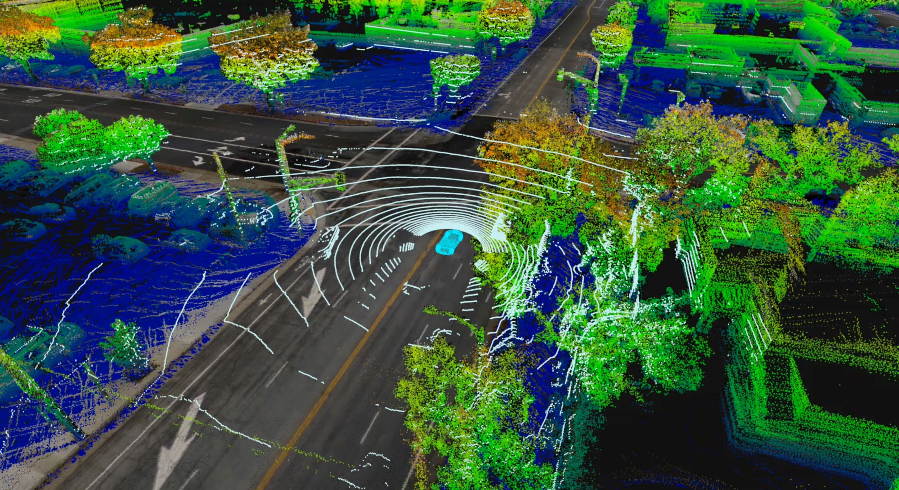
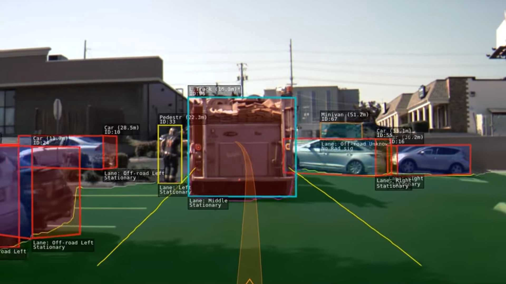
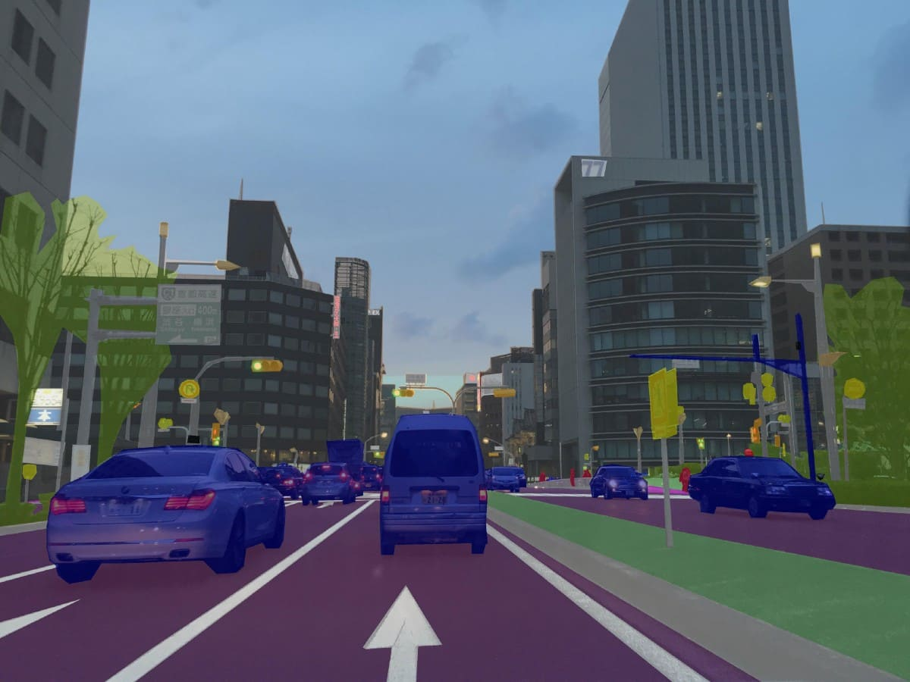
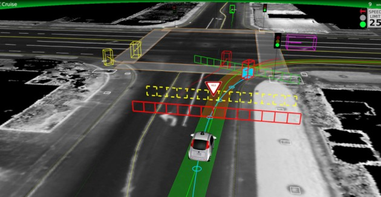
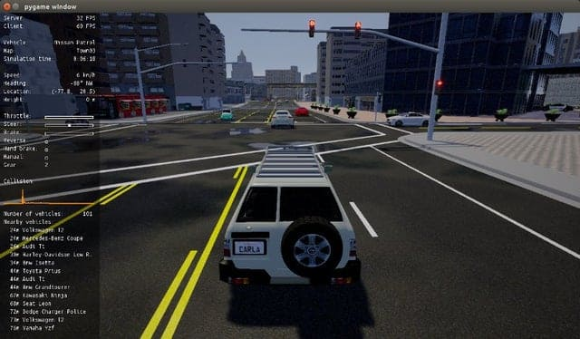

Research Statement
My research interests lie at an intersection of Machine learning, autonomous vehicle and computer vision with a focus on incremental developments in ADAS that aids in autonomous driving, processing information of and outside the vehicle and making decisions for safe navigation. With a long-term research goal to develop a methodology for robust real-time decision-making in autonomous system, my research agenda is primarily focused on:
1. Deploy Reinforcement Learning driving policies on simulator and transfer to real environment:
According to RAND Corporation, to demonstrate that fully autonomous vehicles have a fatality rate of 1.09 fatalities per 100 million miles, the vehicles would have to be driven 275 million failure-free miles. With a fleet of 100 autonomous vehicles being test-driven 24 hours a day, 365 days a year at an average speed of 25 miles per hour, this would take about 12.5 years. This has to be tested on public roads, but physical testing directly on public roads is unsafe, costly, and not always reproducible. This is where testing in simulation helps fill the gap. However, the problem with simulation testing is that it is only as good as the simulator used for testing and how representative the simulated scenarios are of the real environment. A key role in testing and training self-driving cars is rigorously performing trails on simulator for it to handle situations as expected on public roads. This drives my interest further into implementing sim2real transfer of trained RL driving policies to bridge the ‘reality gap’.
With Reinforcement Learning, an autonomous agent learns to improve its performance at an assigned task by interacting with its environment. For each state experienced, the agent chooses an action and receives an occasional reward from its environment based on the usefulness of its decision. The goal for the agent is to maximize the cumulative rewards received over its lifetime. Gradually, the agent can increase its long-term reward by exploiting knowledge learned about the expected future rewards of different state action pairs. To manage the trade-off between exploration and exploitation is one of the main challenges in reinforcement learning. To maximize the rewards it receives, an agent must exploit its knowledge by selecting actions which are known to result in high rewards. For discovering such beneficial actions, it has to take the risk of trying new actions which may lead to higher rewards than the current best-valued actions for each system state. Thus, the learning agent must exploit what it already knows in order to obtain rewards, but it also has to explore the unknown in order to make better action selections in the future.
Examples of strategies which have been proposed to manage this trade-off include ԑ-greedy and softmax. When adopting the ԑ-greedy strategy, an action is selected by the agent at random with probability 0 < ԑ < 1, or the agent greedily selects the highest valued action for the current state with the remaining probability 1 − ԑ. Intuitively, the agent should explore more at the beginning of the training process when little is known about the problem environment. As training progresses, the agent may gradually conduct more exploitation than exploration. The design of exploration strategies for RL agents in a highly dynamic and uncertain environment for AV is challenging.
Autonomous driving requires reliable and accurate detection and recognition of surrounding objects in real drivable environments. Although different object detection algorithms have been proposed, not all are robust enough to detect and recognize occluded or truncated objects in adverse weather conditions and make correct decisions. Though radar can supplement cameras in low visibility, precise detection of surrounding objects smaller in size is difficult, which can be overcome only with the use of highly sensitive radar sensors. Use of LiDAR provides the required added information of the surrounding with HD maps. But the environment has to be pre-mapped with the LiDAR and add all the lanes, their connections along with traffic lights post for creating HD maps. Thus, it is challenging to build these High-Definition maps at scale, as it is difficult to map each location to which the car would travel.
The ability to perceive and understand surrounding road-users behaviors is also crucial for self-driving vehicles to plan reliable reactions. Computer vision applications in autonomous vehicles relies mostly on machine learning techniques that enables to perform several perception tasks such as lane detection, detecting objects-moving vehicles, pedestrians in the the field of view. Though pedestrians can be tracked with 3D bounding boxes along with their pose with libraries like OpenPose or Mediapipe, predicting their intent or uncertain movement is challenging in crowded areas due to occlusion.





